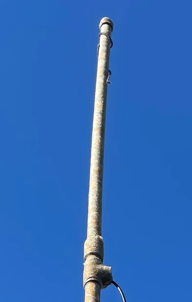
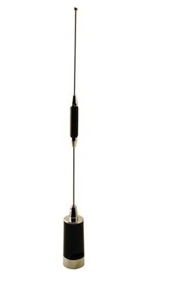
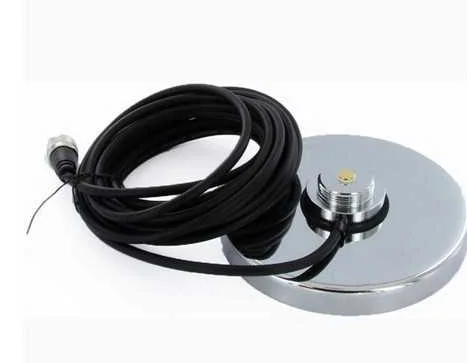
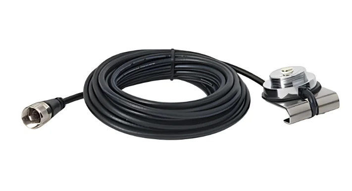
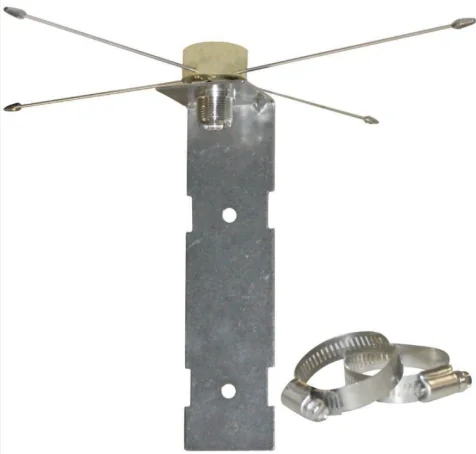

Hazla tú mismo
Flower Pot VHF

Simple, económica y confiable. RUFCOM ha construido versiones con 4 m y 14 m de cable, ambas con excelente desempeño.
- ✔ PVC de aprox. 1 metro
- ✔ 25 mm de diámetro
- ✔ 457 mm + 447 mm
- ✔ Choke de 9 vueltas
Antenas
Dos caminos para tu estación: construir una antena Flower Pot VHF o elegir una TRAM 1180.
Una buena antena puede cambiar mucho más tu experiencia que simplemente comprar una radio más cara.
Hazla tú mismo

Simple, económica y confiable. RUFCOM ha construido versiones con 4 m y 14 m de cable, ambas con excelente desempeño.
Compra lista para montar

Antena móvil dual banda, pensada para utilizar en vehículos, con montaje NMO. RUFCOM la recomienda por su versatilidad para auto y para instalaciones fijas usando un plano de tierra adecuado.
Una antena, distintas instalaciones
Elige el montaje según dónde la vas a usar.

Permite montar y retirar la antena sobre una superficie de acero adecuada, como el techo del vehículo.

Se fija al borde de la tapa del maletero mediante una abrazadera, sin necesidad de perforar la carrocería. Su instalación depende del soporte y del vehículo.

Permite adaptar la instalación a un mástil en casa, usando una base compatible. Los radiales son las varillas metálicas que forman el plano de tierra: la parte conductora que ayuda a la antena a trabajar correctamente fuera del vehículo.